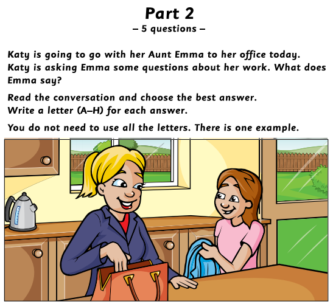
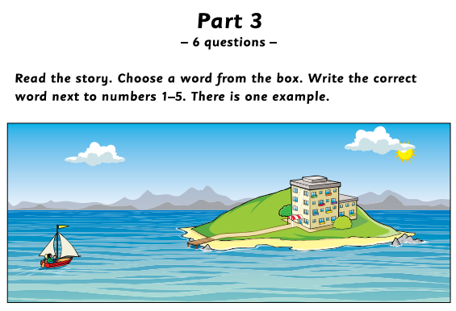
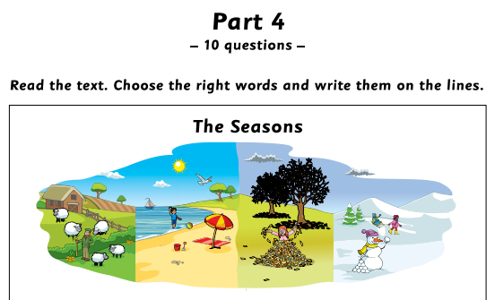
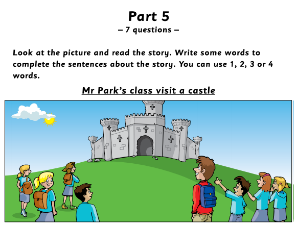
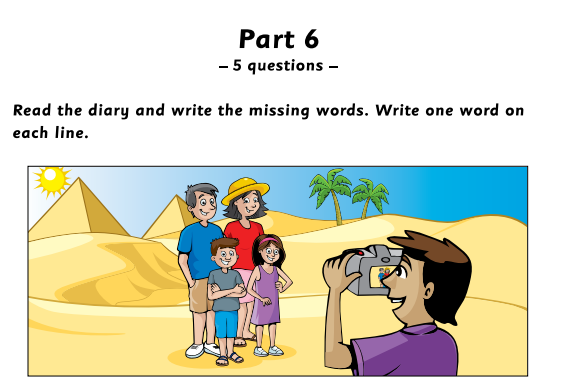
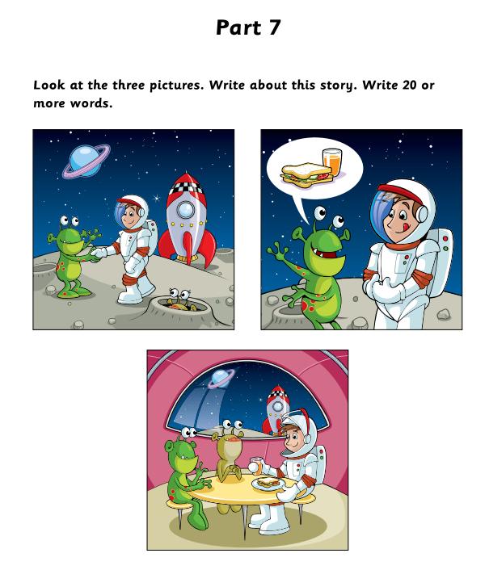

Official Cambridge Practice Materials
Example: This person can fly to the moon in a rocket. 👉 an astronaut
1. This is made from fruit and you can put it on your bread with a knife.
2. Players in this game throw, catch and hit the ball on a sports field.
3. These have pictures on them and you can write on the back and send them to friends when you're on holiday.
4. It is this person's job to write about news in a newspaper.
5. You buy these and put them on your envelopes before you post them.
6. This person flies a plane and usually wears a uniform.
7. People like reading these because they have stories with pictures or photos on their pages.
8. You can play this game inside on ice or outside on a field.
9. Some people like this in their tea or coffee and they put it in with a spoon.
10. People don't usually play this game in teams. They use a small, hard white ball.

Example: Katy: Emma, is it time to go to your office? 👉 E. Yes it is. I don't want to be late.
1. Katy: Do you always walk to work?
2. Katy: How many people work there?
3. Katy: Where do you eat your lunch?
4. Katy: Can I play on the computer in your office?
5. Katy: What time do you come home?

6. Now choose the best name for the story: -- Choose title --Harry buys pizzaLunch on a boatThe new cooks


1. Mr Park and the children went in a to a castle.
2. The castle that they visited was near and on a hill.
3. Mr Park gave everyone when they arrived at the castle.
4. The children looked at the of the castle.
5. Some of the children had on the way down the hill.
6. Paul because he fell over when he was running.
7. Paul went back to the bus on a !

1. Today we've been visit the pyramids.
2. My teacher told me about them in our Geography .
3. ...in the pictures they looked much smaller they are.
4. We went inside one and I took lots of photos.
5. I am very excited I have always wanted to ride one.

Write your story here (Minimum 20 words):